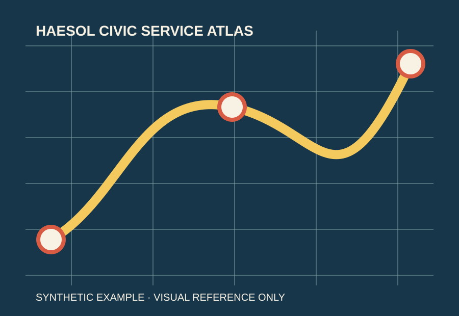
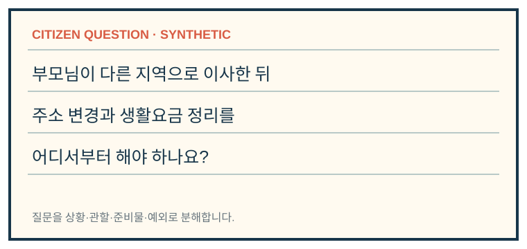
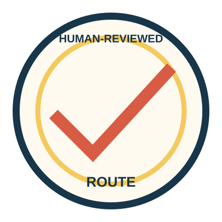
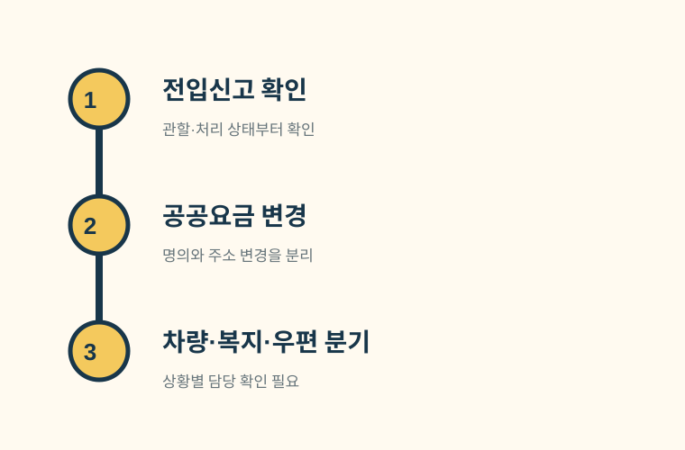
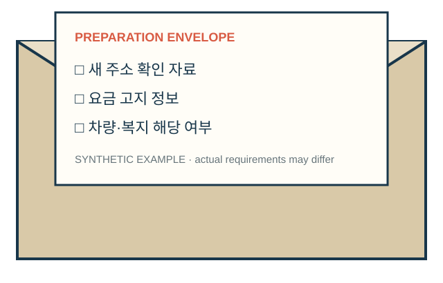
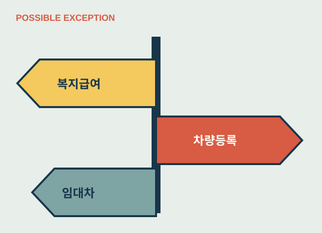
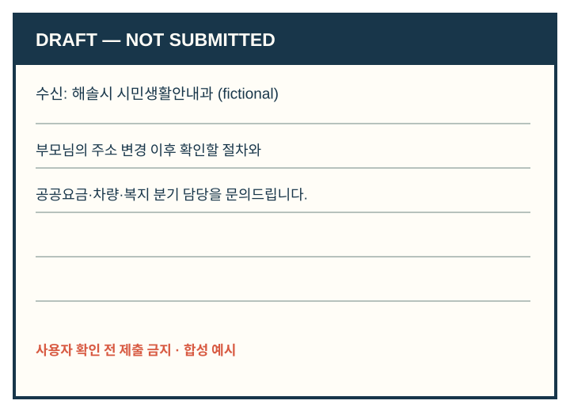
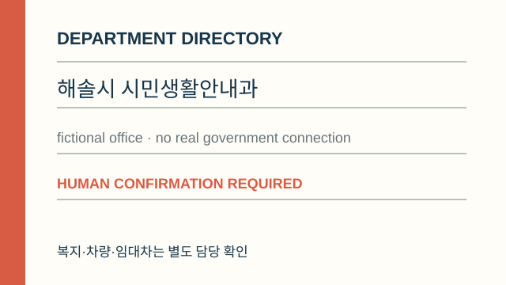
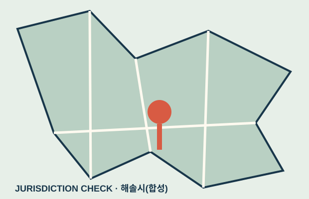

VOL. 01 · MOVING HOME
어디에, 어떤 순서로,
무엇을 준비해
문의해야 할까요?
CITIZEN QUESTION부모님 이사 뒤 주소 변경과 생활요금 정리를 어디서부터 해야 하나요?
01 / QUESTION DECOMPOSITION
행정용어보다 먼저,
시민의 상황을 나눕니다.

상황 01부모님이 다른 지역으로 이사함CITIZEN-FRIENDLY EXPLANATION
상황 02주소 변경이 완료됐는지 모름JURISDICTION CHECK
상황 03생활요금의 명의와 주소를 정리해야 함POSSIBLE EXCEPTION
02 / QUESTION-TO-OFFICIAL-ROUTE
질문에서 공식 경로로
잘못된 경로를 줄이고, 사람이 확인할 지점을 남깁니다.이사주소생활요금
JURISDICTION CHECKFRESHNESS CHECK
PREPARATION새 주소 자료 · 요금 고지 정보 · 해당 분기
POSSIBLE EXCEPTION복지급여 · 차량등록 · 임대차
EXCLUDED ROUTE모든 변경이 한 번에 자동 처리된다는 가정
HUMAN CONFIRMATION REQUIRED복지·차량·임대차는 담당 부서 확인 필요

HUMAN-REVIEWED ROUTEmotion state: complete
03 / PROCEDURE & PREPARATION
한 번에 끝나는 일이 아니라,
확인 순서가 있는 일입니다.
행정 표현전입신고 처리 여부 확인시민 설명주소 변경이 실제로 반영됐는지 먼저 확인합니다.
행정 표현명의 및 사용지 변경시민 설명요금마다 명의와 주소 변경 창구가 다를 수 있습니다.


04 / BRANCHES & HUMAN CHECK
같은 이사라도,
상황에 따라 다른 길로 갑니다.

수급 상태와 가구 구성에 따라 담당 확인이 필요합니다.
차량 소유·사용지 조건에 따라 별도 변경이 필요할 수 있습니다.
계약 관계와 우편 수령 상황은 자동 판단하지 않습니다.
자동 판단하지 않음


문의 대상은 합성 부서이며 실제 연결되지 않습니다.
SYNTHETIC EXAMPLE
부모님 이사 뒤 무엇부터 확인하나요?
- 1전입신고 반영 여부 확인
- 2공공요금 명의·주소 변경
- 3차량·복지·우편 분기
